cacct 查看作业信息
cacct可以查看队列中的作业信息。
查看集群中所有队列的作业信息（包括所有状态），默认输出100条信息。
cacct
cacct运行结果展示
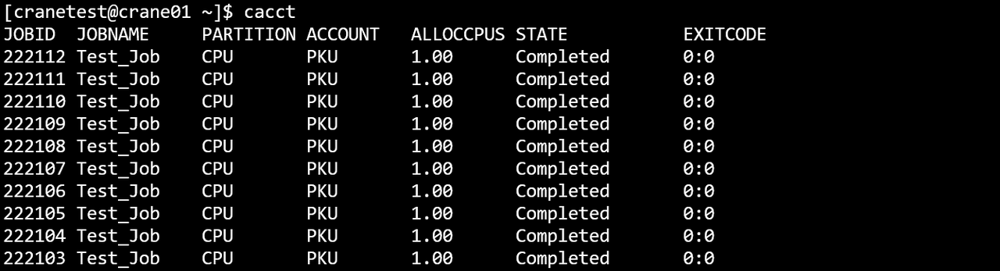
主要输出项
- TaskId：作业号
- TaskName: 作业名
- Partition：作业所在分区
- Account：作业所属账户
- AllocCPUs：作业分配的CPU数量
- State：作业状态
- ExitCode：作业状态码
主要参数
- -A/--account string：指定查询作业的所属账户，指定多个账户时用逗号隔开
- -C/--config string：配置文件路径(默认为 "/etc/crane/config.yaml")
- -E/--end-time string：指定查询该时间之前结束的作业，例：cacct -E=~2023-03-14T10:00:00
- -o/--format string：指定输出格式。由百分号（%）后接一个字符或字符串标识。 在 % 和格式字符/字符串之间用点（.）和数字，可指定字段的最小宽度。支持的格式标识符或字符串（不区分大小写）：
- %a/%Account： 显示作业关联的账户
- %c/%AllocCpus：显示作业已分配的 CPU 数量
- %e/%CpuPerNode：显示作业每个节点请求的 CPU 数量
- %h/%ElapsedTime：显示作业自启动以来的已用时间
- %j/%JobId：显示作业 ID
- %k/%Comment：显示作业的备注
- %l/%NodeList：显示作业正在运行的节点列表
- %m/%TimeLimit：显示作业的时间限制
- %n/%MemPerNode：显示作业每个节点请求的内存量
- %N/%NodeNum：显示作业请求的节点数量
- %n/%Name：显示作业名称
- %P/%Partition：显示作业运行所在的分区
- %p/%Priority：显示作业的优先级
- %Q/%QOS：显示作业的服务质量（QoS）级别
- %R/%Reason：显示作业挂起的原因
- %r/%ReqNodes：显示作业请求的节点
- %S/%StartTime：显示作业的开始时间
- %s/%SubmitTime：显示作业的提交时间
- %t/%State：显示作业的当前状态
- %T/%JobType：显示作业类型
- %u/%Uid：**显示作业的 UID
- %U/%User：显示提交作业的用户
- %x/%ExcludeNodes：显示作业排除的节点
- 每个格式标识符或字符串可用宽度说明符修改（如 "%.5j" ）。 若指定宽度，则会被格式化为至少达到该宽度。 若格式无效或无法识别，程序会报错并终止。
- 例：--format "%.5j %.20n %t" 会输出作业 ID（最小宽度 5）、名称（最小宽度 20）和状态。
- -F/-full：显示完整信息
- -h/--help: 显示帮助
- -j/--job string：指定查询作业号，指定多个作业号时用逗号隔开。如 -j=2,3,4
- --json：json格式输出命令执行结果
- -m/--max-lines uint32：指定输出结果的最大条数。如-m=500表示最多输出500行查询结果
- -n/ --name string：指定查询作业名，指定多个作业名时用逗号隔开
- -N/--no header：输出隐藏表头
- -p/--partition string：指定要查看的分区，多个分区名用逗号隔开，默认为全部
- -q/--qos string：指定要查看的Qos，多个Qos用逗号隔开，默认为全部
- -S/--start-time string：筛选开始时间在特定时间段内的作业，可使用闭区间（时间格式：2024-01-02T15:04:05~2024-01-11T11:12:41 ）或半开区间（时间格式：2024-01-02T15:04:05~ 或 ~2024-01-11T11:12:41 ）
- -t/--state string：指定要查看的作业状态，支持的状态：pending(p)（挂起 ）、running(r)（运行中 ）、completed(c)（已完成 ）、failed(f)（失败 ）、cancelled(x)（已取消 ）、time-limit-exceeded(t)（超时 ）、all（所有 ）。（默认 “all” ）
- -s/--submit-time string：筛选提交时间在特定时间段内的作业，可使用闭区间（时间格式：2024-01-02T15:04:05~2024-01-11T11:12:41 ）或半开区间（时间格式：2024-01-02T15:04:05~ 或 ~2024-01-11T11:12:41 ）
- -u/--user string：指定查询某个用户的作业，指定多个用户时用逗号隔开
- -v/--version：查询版本号
- 例：
cacct
cacct -h
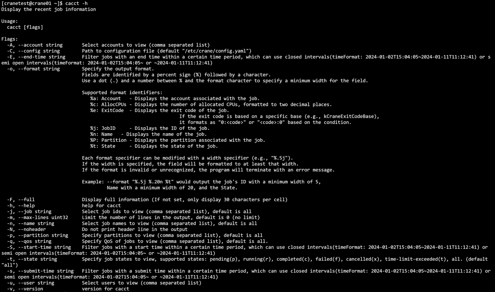
cacct -N
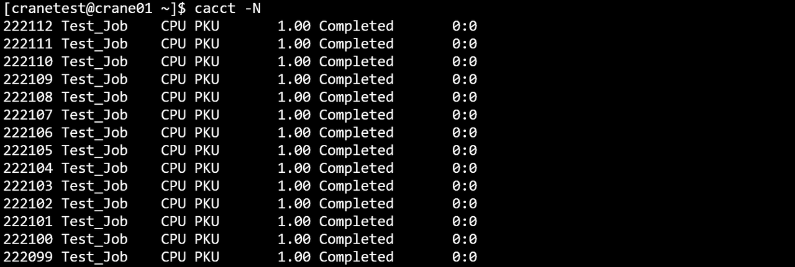
cacct -S=2024-07-22T10:00:00~2024-07-24T10:00:00
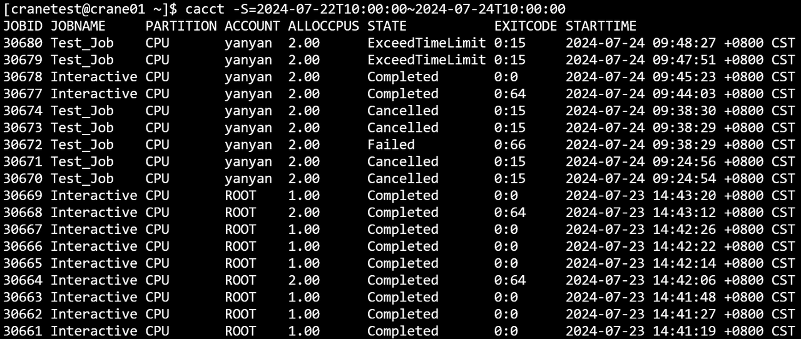
cacct -E=2024-07-22T10:00:00~2024-07-24T10:00:00
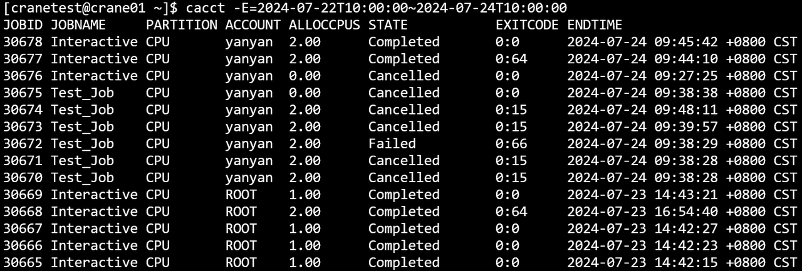
cacct -j=30618,30619,30620
cacct -u=cranetest
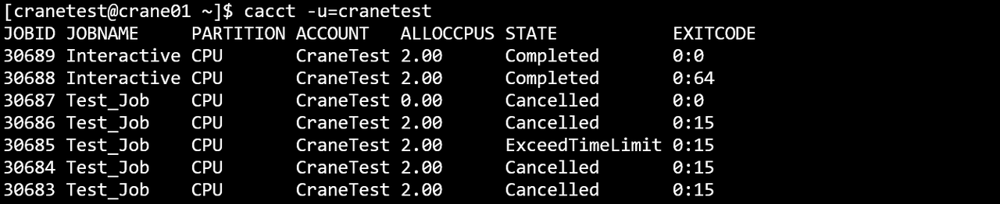
cacct -A=CraneTest
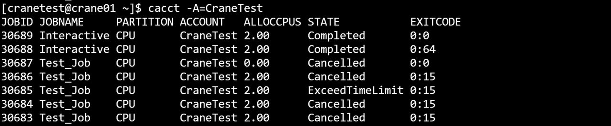
cacct -m=10
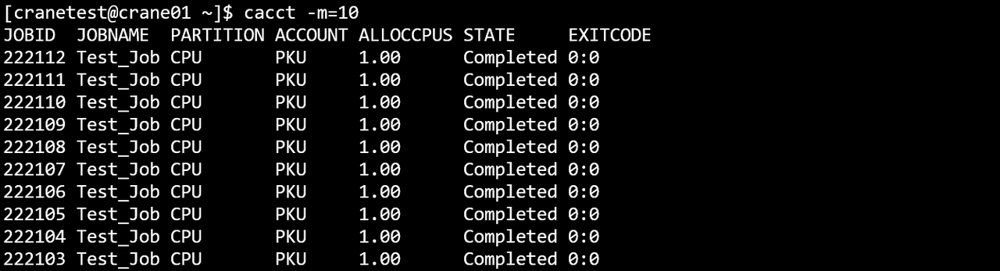
cacct -p GPU
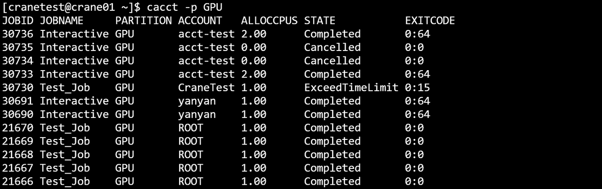
cacct -n=Test_Job
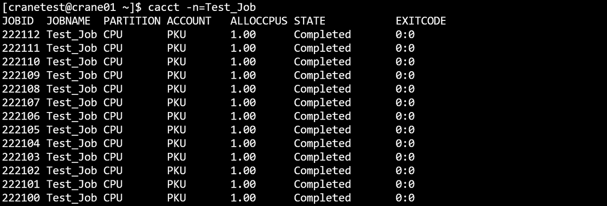
cacct -o="%j %.10n %P %a %t"
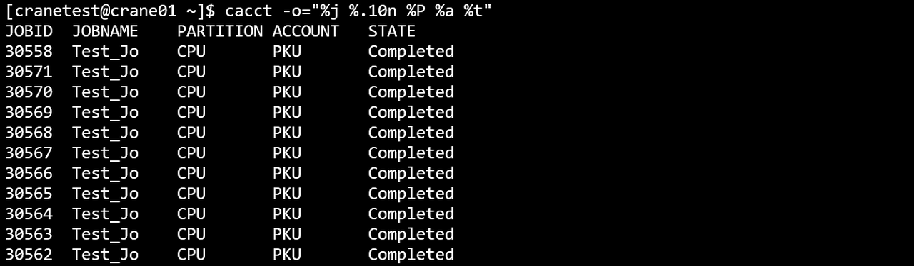
cacct -A ROOT -m 10
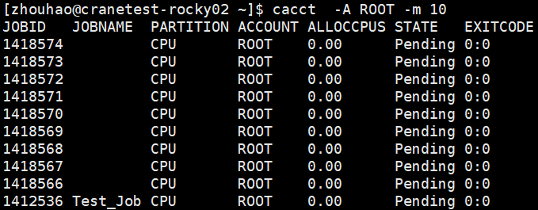
cacct -m 10 -j 783925,783889 -t=c -F
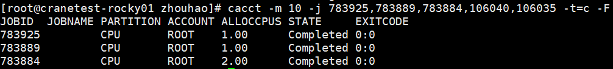
cacct -n test
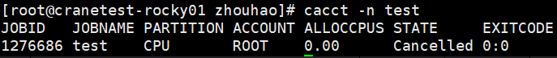
cacct -q test_qos
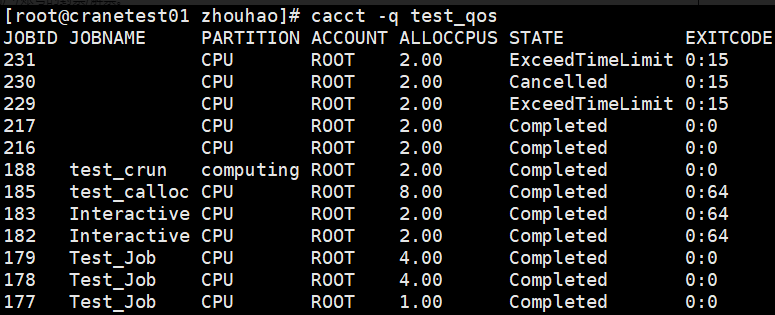
cacct -m 10 -E=2024-10-08T10:00:00~2024-10-10T110:00:00 -p CPU -t c
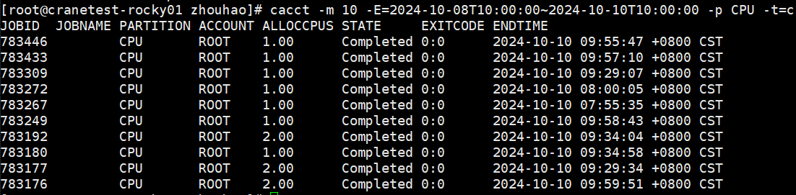